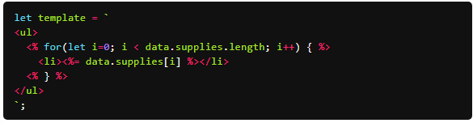
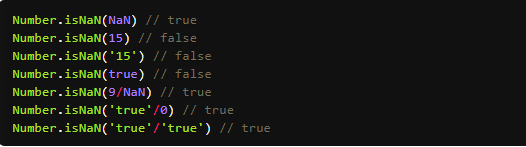
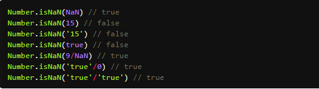
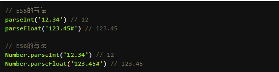
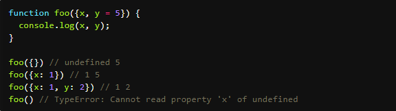

2017年11月19日 星期日
ES6
技术简介 :
ES6
ESMAscript6.0(简称ES6)，是继ESMAscript5.1之后的下一代Javascript语言的下一代标准，发布在2015年6月，它的目标是用JavaScript语言来编写复杂的大型应用程序，成为企业级开发语言。-
一、let命令
1、使用let命令声明的变量，只有在代码块里有效
2、使用let变量不会被提升
3、暂时性死区（只要块级作用域内存在let命令，它所声明的变量就“绑定”（binding）这个区域，不再受外部的影响）； + let f = 10;
function fn() {
f = 7;
let f = 2;
}
fn() //error 4、在同一作用域下不允许声明已经存在的变量
5、let在循环语句的应用
变量i是let声明的，当前的i只在本轮循环有效，所以每一次循环的i其实都是一个新的变量 + var a = [];
for (let i = 0; i < 10; i++) {
a[i] = function () {
console.log(i);
};
}
a[6](); // 6
6、在循环语句之内是一个父作用域、而在循环体之中是一个子作用域
(let声明的变量不会泄露到作用域之外的) + for (let i=0;i<9;i++)//父作用域{
let i =10; //子作用域
console.log(i)//3次10
}
-
二、const命令 常量
const命令同样有let的1/2/3特点，
1、所声明的变量只在其所在的代码块里有效
2、声明的变量不会被提升
3、不能声明已经被声明过的变量
4、声明的时候必须赋值
5、声明的常量在简单的数据类型的时候不可改变其值，如果储存的是对象， 那么引用不可以被改变，只有对象里面的数据如何变化，是没有关系的 + //对象
const a = 1;
a = {};//error
const obj = {a:10};
obj.a = 20;
console.log(obj);// a = 20;
const a = [];
//数组
a.push('Hello'); // 可执行
a.length = 0; // 可执行
a = ['Dave']; // 报错
-
三、解构赋值
ES6 允许按照一定模式，从数组和对象中提取值，对变量进行赋值，这被称为解构
1、变量赋值
可以从数组中提取值，按照对应位置，对变量赋值。只要等号两边的模式相同，左边的变量就会被赋予对应的值。 + let [a, b, c] = [1, 2, 3]; 2、嵌套数组进行解构 + let [foo, [[bar], baz]] = [1, [[2], 3]];
foo // 1
bar // 2
baz // 3
let [ , , third] = ["foo", "bar", "baz"];
third // "baz"
let [x, , y] = [1, 2, 3];
x // 1
y // 3
let [head, ...tail] = [1, 2, 3, 4];
head // 1
tail // [2, 3, 4]
let [x, y, ...z] = ['a'];
x // "a"
y // undefined
z // []
如果解构不成功，变量的值就等于undefined。
3、默认值
解构赋值允许指定默认值。 + let [foo = true] = [];
foo // true
let [x, y = 'b'] = ['a']; // x='a', y='b'
let [x, y = 'b'] = ['a', undefined]; // x='a', y='b'
注意，ES6 内部使用严格相等运算符（===），判断一个位置是否有值。所以，如果一个数组成员不严格等于undefined，默认值是不会生效的。 + let [x = 1] = [undefined];
x // 1
let [x = 1] = [null];
x // null
上面代码中，如果一个数组成员是null，默认值就不会生效，因为null不严格等于undefined。 + let [x = 1, y = x] = []; // x=1; y=1
let [x = 1, y = x] = [2]; // x=2; y=2
let [x = 1, y = x] = [1, 2]; // x=1; y=2
let [x = y, y = 1] = []; // ReferenceError
上面最后一个表达式之所以会报错，是因为x用到默认值y时，y还没有声明。
4、对象的解构赋值
解构不仅可以用于数组，还可以用于对象。 + let { foo, bar } = { foo: "aaa", bar: "bbb" };
foo // "aaa"
bar // "bbb
对象的解构与数组有一个重要的不同。数组的元素是按次序排列的，变量的取值由它的位置决定；而对象的属性没有次序，变量必须与属性同名，才能取到正确的值。 + let { bar, foo } = { foo: "aaa", bar: "bbb" };
foo // "aaa"
bar // "bbb"
let { baz } = { foo: "aaa", bar: "bbb" };
baz // undefined
// 没有对应的同名属性，导致取不到值，最后等于undefin ed。
如果变量名与属性名不一致 + let { foo: baz } = { foo: 'aaa', bar: 'bbb' };
baz // "aaa" 也就是说，对象的解构赋值的内部机制，是先找到同名属性，然后再赋给对应的变量。真正被赋值的是后者，而不是前者。 + let { foo: baz } = { foo: "aaa", bar: "bbb" };
baz // "aaa"
foo // error: foo is not defined
上面代码中，foo是匹配的模式，baz才是变量。真正被赋值的是变量baz，而不是模式foo。
5、对象的解构也可以指定默认值。 + var {x = 3} = {};
x // 3
var {x, y = 5} = {x: 1};
x // 1
y // 5
var {x: y = 3} = {};
y // 3
var {x: y = 3} = {x: 5};
y // 5
6、默认值生效的条件是，对象的属性值严格等于undefined。 + var {x = 3} = {x: undefined};
x // 3
var {x = 3} = {x: null};
x // null
7、数组本质是特殊的对象，因此可以对数组进行对象属性的解构。 + let arr = [1, 2, 3];
let {0 : first, [arr.length - 1] : last} = arr;
first // 1
last // 3
上面代码对数组进行对象解构。数组arr的0键对应的值是1，[arr.length - 1]就是2键，对应的值是3。 -
四、字符串解构赋值
字符串也可以解构赋值。这是因为此时，字符串被转换成了一个类似数组的对象。 + const [a, b, c, d, e] = 'hello';
a // "h"
b // "e"
c // "l"
d // "l"
e // "o"
类似数组的对象都有一个length属性，因此还可以对这个属性解构赋值。 + let {length : len} = 'hello';
len // 5
-
五、数值和布尔值的解构赋值
解构赋值时，如果等号右边是数值和布尔值，则会先转为对象。 + let {toString: s} = 123;
s === Number.prototype.toString // true
let {toString: s} = true;
s === Boolean.prototype.toString // true
上面代码中，数值和布尔值的包装对象都有toString属性，因此变量s都能取到值。 + let { prop: x } = undefined; // TypeError
let { prop: y } = null; // TypeError
解构赋值的规则是，只要等号右边的值不是对象或数组，就先将其转为对象。由于undefined和null无法转为对象，所以对它们进行解构赋值，都会报错。 -
六、函数参数的解构赋值
函数的参数也可以使用解构赋值。 + function add([x, y]){
return x + y;
}
add([1, 2]); // 3 函数参数的解构也可以使用默认值。 + function move({x = 0, y = 0} = {}) {
return [x, y];
}
move({x: 3, y: 8}); // [3, 8]
move({x: 3}); // [3, 0]
move({}); // [0, 0]
move(); // [0, 0]
-
七、用途
变量的解构赋值用途很多。
(1)、变化变量的值 + let x = 1;
let y = 2;
[x,y]=[y,x];
上面代码交换变量x和y的值，这样的写法不仅简洁，而且易读，语义非常清晰。
(2)、从函数返回多个值
函数只能返回一个值，如果要返回多个值，只能将它们放在数组和对象里返回。有了解构赋值，取这些值就非常方便。
+ //返回一个数组
function example(){
return [1,2,3]
}
let [a,b,c] = example();
//返回一个对象
function example(){
return{
foo:1,
bar:2
};
}
let {foo,bar} = example(); (3)、函数参数的定义
解构赋值可以方便地将一组参数与变量名对应起来。 + // 参数是一组有次序的值
function f([x, y, z]) { ... }
f([1, 2, 3]);
// 参数是一组无次序的值
function f({x, y, z}) { ... }
f({z: 3, y: 2, x: 1});
(4)、提取JSON数据
解构赋值对提取JSON对象中的数据，尤其有用 + let jsonData = {
id: 42,
status: "OK",
data: [867, 5309]
};
let { id, status, data: number } = jsonData;
console.log(id, status, number);
// 42, "OK", [867, 5309]
(5)、函数参数的默认值
+ jQuery.ajax = function (url, {
async = true,
beforeSend = function () {},
cache = true,
complete = function () {},
crossDomain = false,
global = true,
// ... more config
}) {
// ... do stuff
};
(6)、遍历Map解构
任何部署了 Iterator 接口的对象，都可以用for...of循环遍历。Map 结构原生支持 Iterator 接口，配合变量的解构赋值，获取键名和键值就非常方便。 + const map = new Map();
map.set('first', 'hello');
map.set('second', 'world');
for (let [key, value] of map) {
console.log(key + " is " + value);
}
// first is hello
// second is world
如果只想获取键名，或者只想获取键值，可以写成下面这样。 + // 获取键名
for (let [key] of map) {
// ...
}
// 获取键值
for (let [,value] of map) {
// ...
}
(7)、输入模块的指定方法
加载模块时，往往需要指定输入哪些方法。解构赋值使得输入语句非常清晰。 + const { SourceMapConsumer, SourceNode } = require("source-map"); -
八、字符串扩展
1、 ES6为字符串添加了遍历器接口，使得字符串可以被for.....of循环遍历 + for (let i of 'foo') {
console.log(i)
}
// "f"
// "o"
// "o"
2、includes(), startsWith(), endsWith()
JavaScript 只有indexOf方法，可以用来确定一个字符串是否包含在另一个字符串中
includes()：返回布尔值，表示是否找到了参数字符串。
startsWith()：返回布尔值，表示参数字符串是否在原字符串的头部。
endsWith()：返回布尔值，表示参数字符串是否在原字符串的尾部。
+ let s = 'Hello world!';
s.includes('o') // true
s.startsWith('Hello') // true
s.endsWith('H') // true
这三个方法都支持第二个参数，表示开始搜索的位置。 + let s = 'Hello world!';
s.startsWith('world', 6) // true
s.endsWith('Hello', 5) // true
s.includes('Hello', 6) // false
使用第二个参数n时，endsWith的行为与其他两个方法有所不同。它针对前n个字符，而其他两个方法针对从第n个位置直到字符串结束。
3、repeat()
repeat方法返回一个新字符串，表示将原字符串重复n次。 + 'x'.repeat(3) // "xxx"
'hello'.repeat(2) // "hellohello"
'na'.repeat(0) // ""
参数如果是小数，会被取整。 + 'na'.repeat(2.9) // "nana" 如果repeat的参数是负数或者Infinity，会报错。 + 'na'.repeat(Infinity)
// RangeError
'na'.repeat(-1)
// RangeError
但是，如果参数是 0 到-1 之间的小数，则等同于 0，这是因为会先进行取整运算。0 到-1 之间的小数，取整以后等于-0，repeat视同为 0。 + 'na'.repeat(-0.9) // "" 参数NaN等同于 0。 + 'na'.repeat(NaN) // "" 如果repeat的参数是字符串，则会先转换成数字。 + 'na'.repeat('na') // ""
'na'.repeat('3') // "nanana" 4、padStart()，padEnd()
ES2017 引入了字符串补全长度的功能。如果某个字符串不够指定长度，会在头部或尾部补全。padStart()用于头部补全，padEnd()用于尾部补全。 + 'x'.padStart(5, 'ab') // 'ababx'
'x'.padStart(4, 'ab') // 'abax'
'x'.padEnd(5, 'ab') // 'xabab'
'x'.padEnd(4, 'ab') // 'xaba'
(1)如果原字符串的长度，等于或大于指定的最小长度，则返回原字符串
(2) 如果省略第二个参数，默认使用空格补全长度
(3) padStart的常见用途为数值补全指定位数 + '1'.padStart(10, '0') // "0000000001"
'12'.padStart(10, '0') // "0000000012"
'123456'.padStart(10, '0') // "0000123456"
(4)另一个用途是提示字符串格式。 + '12'.padStart(10, 'YYYY-MM-DD') // "YYYY-MM-12"
'09-12'.padStart(10, 'YYYY-MM-DD') // "YYYY-09-12" 5、模板字符串
(1) 传统的JavaScript语言，输出模板通常是这样写的。 + $('#result').append(
'There are ' + basket.count + ' ' +
'items in your basket, ' +
'' + basket.onSale +
' are on sale!'
); 上面这种写法相当繁琐不方便、ES6 引入了模板字符串解决这个问题。
+ $('#result').append(`
There are ${basket.count} items
in your basket, ${basket.onSale}
are on sale!
`);
(2) 模板字符串（template string）是增强版的字符串，用反引号（`）标识。它可以当作普通字符串使用，也可以用来定义多行字符串，或者在字符串中嵌入变量。 + // 普通字符串
`In JavaScript '\n' is a line-feed.`
// 多行字符串
`In JavaScript this is
not legal.`
console.log(`string text line 1
string text line 2`);
// 字符串中嵌入变量
let name = "Bob", time = "today";
`Hello ${name}, how are you ${time}?`
上面代码中的模板字符串，都是用反引号表示。如果在模板字符串中需要使用反引号，则前面要用反斜杠转义。 + let greeting = `\`Yo\` World!`; (3) 如果使用模板字符串表示多行字符串，所有的空格和缩进都会被保留在输出之中。 + $('#list').html(`
< ul>
< li>first< /li>
< li>second< /li>
< /ul>
`); 上面的代码模板字符串的空格和换行、都是会保留的，如果你不想换行，可以用trim方法消除它 + $('#list').html(`
< ul>
< li>first< /li>
< li>second< /li>
< /ul>
`).trim()); (4) 模板字符串中嵌入变量，需要将变量名写在${}之中。
(5) 大括号内部可以放入任意的JavaScript表达式，可以进行运算，以及引用对象属性
+ let x = 1;
let y = 2;
`${x} + ${y} = ${x + y}`
// "1 + 2 = 3"
`${x} + ${y * 2} = ${x + y * 2}`
// "1 + 4 = 5"
let obj = {x: 1, y: 2};
`${obj.x + obj.y}`
// "3"
(6)模板字符串之中还能调用函数 + function fn() {
return "Hello World";
}
`foo ${fn()} bar`
// foo Hello World bar
(7)如何字符串里的变量没有声明，将报错 + // 变量place没有声明
let msg = `Hello, ${place}`;
// 报错
(8) 由于模板字符串的大括号内部，就是执行 JavaScript 代码，因此如果大括号内部是一个字符串，将会原样输出。 + `Hello ${'World'}` // "Hello World" (9)模板字符串甚至还能嵌套。 + const tmpl = addrs => `
< table>
${addrs.map(addr => `
< tr>< td>${addr.first}< /td>< /tr>
< tr>< td>${addr.last}< /td>< /tr>
`).join('')}
< /table>
` const data = [
{ first: '< Jane>', last: 'Bond' },
{ first: 'Lars', last: '< Croft>' },
]; console.log(tmpl(data));
// < table>
//
// < tr>< td>< Jane>< /td>< /tr>
// < tr>< td>Bond< /td>< /tr>
//
// < tr>< td>Lars< /td>< /tr>
// < tr>< td>< Croft>< /td>< /tr>
//
// < /table>
(10)、实例：模板编译 在模板字符串之中，放置了一个常规模板。该模板使用<%...%>放置 JavaScript 代码，使用<%= ... %>输出 JavaScript 表达式。 +  6、标签模板
模板字符串的功能，不仅仅是上面这些。它可以紧跟在一个函数名后面，该函数将被调用来处理这个模板字符串。这被称为“标签模板”功能（tagged template）。 + alert`123`
// 等同于
alert(123)
7、String.raw()
String.raw方法，往往用来充当模板字符串的处理函数，返回一个斜杠都被转义（即斜杠前面再加一个斜杠）的字符串，对应于替换变量后的模板字符串。 + String.raw({ raw: 'test' }, 0, 1, 2);
// 't0e1s2t'
// 等同于
String.raw({ raw: ['t','e','s','t'] }, 0, 1, 2);
-
九、正则的扩展
1、Number.isFinite(), Number.isNaN()
Number.isFinite()用来检查一个数值是否为有限的（finite） + Number.isNaN()用来检查一个值是否为NaN。
+

它们与传统的全局方法isFinite()和isNaN()的区别在于，传统方法先调用Number()将非数值的值转为数值，再进行判断，而这两个新方法只对数值有效，Number.isFinite()对于非数值一律返回false, Number.isNaN()只有对于NaN才返回true，非NaN一律返回false。
Number.isNaN()用来检查一个值是否为NaN。
+

它们与传统的全局方法isFinite()和isNaN()的区别在于，传统方法先调用Number()将非数值的值转为数值，再进行判断，而这两个新方法只对数值有效，Number.isFinite()对于非数值一律返回false, Number.isNaN()只有对于NaN才返回true，非NaN一律返回false。
2、Number.parseInt(), Number.parseFloat()
ES6 将全局方法parseInt()和parseFloat()，移植到Number对象上面，行为完全保持不变。 +  这样做的目的，是逐步减少全局性方法，使得语言逐步模块化。 + Number.parseInt === parseInt // true
Number.parseFloat === parseFloat // true 3、Number.isInteger()
Number.isInteger()用来判断一个值是否为整数。需要注意的是，在 JavaScript 内部，整数和浮点数是同样的储存方法，所以 3 和 3.0 被视为同一个值。 + Number.isInteger(25) // true
Number.isInteger(25.0) // true
Number.isInteger(25.1) // false
Number.isInteger("15") // false
Number.isInteger(true) // false 4、Math.trunc()
Math.trunc方法用于去除一个数的小数部分，返回整数部分。
对于非数值，Math.trunc内部使用Number方法将其先转为数值。
对于空值和无法截取整数的值，返回NaN。
+ Math.trunc(4.1) // 4
Math.trunc(-4.9) // -4
Math.trunc(-0.1234) // -0
Math.trunc('123.456') // 123
Math.trunc(true) //1
Math.trunc(false) // 0
Math.trunc(null) // 0
Math.trunc(NaN); // NaN
Math.trunc('foo'); // NaN
Math.trunc(); // NaN
5、Math.sign()
Math.sign方法用来判断一个数到底是正数、负数、还是零。对于非数值，会先将其转换为数值
它会返回五种值。
参数为正数，返回+1；
参数为负数，返回-1；
参数为 0，返回0；
参数为-0，返回-0;
其他值，返回NaN。
如果参数是非数值，会自动转为数值。对于那些无法转为数值的值，会返回NaN + Math.sign(-5) // -1
Math.sign(5) // +1
Math.sign(0) // +0
Math.sign(-0) // -0
Math.sign(NaN) // NaN
Math.sign('') // 0
Math.sign(true) // +1
Math.sign(false) // 0
Math.sign(null) // 0
Math.sign('9') // +1
Math.sign('foo') // NaN
6、Math.cbrt()
Math.cbrt方法用于计算一个数的立方根。
对于非数值，Math.cbrt方法内部也是先使用Number方法将其转为数值。 + Math.cbrt(-1) // -1
Math.cbrt(0) // 0
Math.cbrt(1) // 1
Math.cbrt(2) // 1.2599210498948734
Math.cbrt('8') // 2
Math.cbrt('hello') // NaN 7、指数运算符
ES2016 新增了一个指数运算符（**）。 + 2 ** 2 = 2 * 2 //4
2 ** 3 = 2 * 2 *2 //8
指数运算符可以与等号结合，形成一个新的赋值运算符（**=）。 + let a = 1.5;
a **= 2;
// 等同于 a = a * a;
let b = 4;
b **= 3;
// 等同于 b = b * b * b;
-
十、函数的扩展
1、ES6 允许为函数的参数设置默认值，即直接写在参数定义的后面。 + function log(x, y = 'World') {
console.log(x, y);
}
log('Hello') // Hello World
log('Hello', 'China') // Hello China
log('Hello', '') // Hello
function Point(x = 0, y = 0) {
this.x = x;
this.y = y;
}
const p = new Point();
p // { x: 0, y: 0 }
参数变量是默认声明的，所以不能用let或const再次声明。 + function foo(x = 5) {
let x = 1; // error
const x = 2; // error
}
使用参数默认值时，函数不能有同名参数。
2、与解构赋值默认值结合使用 +  上面的代码只使用了对象的解构赋值默认值，没有使用函数参数的默认值。 只有当函数foo的参数是一个对象时，变量X和Y才会通过解构赋值生成。 如果foo调用时没提供参数，变量x和y就不会生成，从而报错。
通过提供函数参数的默认值，就可以避免这种情况。 + function foo({x,y = 5} = {}){
console.log(x,y);
}
foo() //undegined 5
3、参数默认值的位置
通常情况下，定义了默认值的参数，应该是函数的尾参数。因为这样比较容易看出来 ，到底省略了那些参数。如果非尾部的参数设置默认值，实际上这个参数是无法省略的 + function f(x,y=1){
return [x,y];
}
f(); //[undefined,1]
f(2); //[2,1]
如果传入undefined，将触发该参数等于默认值，null则没有这个效果。 + function foo(x = 5, y = 6) {
console.log(x, y);
}
foo(undefined, null)
// 5 null 4、函数的length属性
指定了默认值以后,函数的length属性，将返回没有指定默认值的参数个数， 也就是说，指定了默认值后，length属性将失真。 + (function(a){}).length //1
(function(a = 5){}).length //0
(function(a,b,c=5){}).length //2
如果设置了默认值的参数不是尾参数，那么length属性也不再计入后面的参数了。 + (function (a = 0, b, c) {}).length // 0
(function (a, b = 1, c) {}).length // 1 5、作用域
一旦设置了参数的默认值，函数进行声明初始化时，参数会形成一个单独的作用域。 等初始化结束，这个作用域就会消失。这种语法行为，在不设置参数默认值时，是不会出现的 + var x =1;
function f(x,y=x){
console.log(y)
}
f(2) //2 上面的代码中，参数y的默认值等于变量x。调用函数f时，参数形成一个单独的作用域。 在这个作用域里面，默认值变量x指向第一个参数x，而不是全局变量x，所以输出是2 + let x =1;
function f(y = x){
let x =2;
console.log(y);
}
f(); 上面的代码，函数f调用时，参数y=x形成一个单独的作用域。这个作用域里面，变量x本身没有定义 所以指向外层的全局变量x。函数调用时，函数体内部的局部变量x影响不到默认变量x
6、应用
利用参数默认值，可以指定某一个参数不得省略，如果省略就抛出一个错误 + function throwIfMissing(){
throw new Error('Missing parameter');
}
function foo(mustBeProvided = throwIfMissing()){
return mustBeProvided;
}
foo()
//Error:Missing parameter
7、rest参数
ES6引入rest参数(形成为...变量名)，用于获取函数的多余参数，这样就不需要 使用arguments对象了。rest参数搭配的变量是一个数组，该变量将多余的参数放入数组中。 + function add(...values){
let sum = 0;
for(var val of values){
sum += val;
}
return sum;
}
add(2,5,3) //10 下面是一个 rest 参数代替arguments变量的例子。
sort排序功能 + // arguments变量的写法
function sortNumbers() {
return Array.prototype.slice.call(arguments).sort();
}
// rest参数的写法
const sortNumbers = (...numbers) => numbers.sort();
push实例 + function push(array, ...items) {
items.forEach(function(item) {
array.push(item);
console.log(item);
});
}
var a = [];
push(a, 1, 2, 3)
注意，rest 参数之后不能再有其他参数（即只能是最后一个参数），否则会报错。
函数的length属性，不包括 rest 参数。
8、严格模式 ES2016 做了一点修改，规定只要函数参数使用了默认值、解构赋值、或者扩展运算符，那么函数内部就不能显式设定为严格模式，否则会报错。 + // 报错 function doSomething(a, b = a) {
'use strict';
// code
}
// 报错
const doSomething = function ({a, b}) {
'use strict';
// code
};
// 报错
const doSomething = (...a) => {
'use strict';
// code
};
const obj = {
// 报错
doSomething({a, b}) {
'use strict';
// code
}
};
这样规定的原因是，函数内部的严格模式，同时适用于函数体和函数参数。但是，函数执行的时候，先执行函数参数，然后再执行函数体。这样就有一个不合理的地方，只有从函数体之中，才能知道参数是否应该以严格模式执行，但是参数却应该先于函数体执行。
两种方法可以规避这种限制。第一种是设定全局性的严格模式，这是合法的。 + 'use strict';
function doSomething(a, b = a) {
// code
}
第二种是把函数包在一个无参数的立即执行函数里面。 + const doSomething = (function () {
'use strict';
return function(value = 42) {
return value;
};
}()); 9、name属性
函数的name属性，返回该函数的函数民 + function foo(){}
foo.name //foo 如果将一个具名函数赋值给一个变量，则ES5和ES6的name属性都返回这个具有函数原来的名字 + const bar = function baz(){}
//ES5
bar.name //baz
//ES6
bar.name //baz Function构造函数返回的函数实例，name属性的值为anonymous + (new Function).name //anonymous bind返回的函数，name属性值会加上bound前缀
10、箭头函数
ES6允许使用“箭头”(=>)定义函数 + var f = v => v;
//等同于下面的函数
var f = function(v){
return v;
}
如果箭头函数不需要参数或需要多个参数，就使用一个圆括号代表参数部分 + var f = () =>5;
//等同于
var f = function(){return 5};
var sum = (num1,num2) => num1 + num2;
//等同于
var sum = function(num1,num2){
return num1 + num2;
}
如果箭头函数的代码块部分多于一条语句，就要使用大括号将它们括起来， 并且使用return语句返回。 + var sum = (num1,num2) => {return num1 + num2;} 由于大括号被解释为代码块，所以如果箭头函数直接返回一个对象，必须在对象外面加上括号，否则会报错。 + //报错
let getTempItem = id => {id:id,name:"temp"};
//不报错
let getTempItem = id => ({id:id,name:"temp"});
如果箭头行数只有一行语句，且不需要返回值，可以采用下面的写法，就不用写大括号了. + let fn = () => void doesNotReturn(); 箭头函数可以与变量解构结合使用 + const full = ({first , last}) => first +' '+last;
//等同于
function full(person){
return person.first +' '+person.last;
} 箭头函数使表达式更加简洁 + const isEven = n => n % 2 == 0;
const square = n => n * n; 箭头函数的一个用处是简化回调函数 + [1,2,3].map(function(x)){
return x * x;
}
//箭头函数写法
[1,2,3].map(x => x * x); 另一个例子是 (数组排序) + values = [6,34,2,4,34,3,5,23,12]; //正常函数写法
var result = values.sort(function(a,b){
return a - b;
})
//箭头函数写法
var result = values.sort((a,b) => a - b);
rest参数与箭头函数结合的例子 + const numbers = (...nums) => nums;
numbers(1,2,3,4,5)
//[1,2,3,4,5]
const headAndTail = (headm,...tail) =>[head,tail];
headAndTail(1,2,3,4,5)
//[1,[2,3,4,5]]
使用注意点
(1)函数体内的this对象，就是定义时所在的对象，而不是使用时所在的对象
(2)不可以当作构造函数，也就是说，不可以使用new命令，否则会抛出一个错误
(3)不可以使用arguments对象，该对象在函数体内不存在。如果使用，可以用rest参数代替。
(4)不可以使用yield命令，因此不能用作Generator函数
+ function Timer() {
this.s1 = 0;
this.s2 = 0;
// 箭头函数
setInterval(() => this.s1++, 1000);
// 普通函数
setInterval(function () {
this.s2++;
}, 1000);
}
var timer = new Timer();
setTimeout(() => console.log('s1: ', timer.s1), 3100);
setTimeout(() => console.log('s2: ', timer.s2), 3100);
// s1: 3
// s2: 0
上面代码中，Timer函数内部设置了两个定时器，分别使用了箭头函数和普通函数。前者的this绑定定义时所在的作用域（即Timer函数），后者的this指向运行时所在的作用域（即全局对象）。所以，3100 毫秒之后，timer.s1被更新了 3 次，而timer.s2一次都没更新。
11、嵌套的箭头函数
箭头函数内部，还可以再使用箭头函数 + //ES5
function insert(value) {
return {into: function (array) {
return {after: function (afterValue) {
array.splice(array.indexOf(afterValue) + 1, 0, value);
return array;
}};
}};
}
insert(2).into([1, 3]).after(1); //[1, 2, 3]
//ES6
let insert = (value) => ({into: (array) => ({after: (afterValue) => {
array.splice(array.indexOf(afterValue) + 1, 0, value);
return array;
}})});
insert(2).into([1, 3]).after(1); //[1, 2, 3]